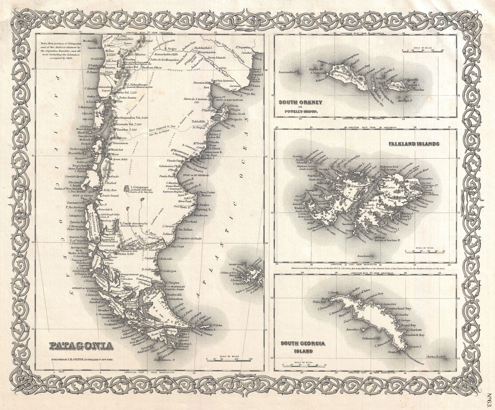

Патагония — суровый дикий край с узкими реками и фьордами, с крутыми склонами и обрывистыми горами, ледниковыми долинами, продуваемыми холодными ветрами. Здесь находятся такие чудеса природы, как гранитные башни в Национальном парке Торрес дель Пайне, Национальный парк Лос-Гласьярес с огромными ледниками, разноцветными осадочными породами и потрясающей красоты изумрудными озерами и реками.
Патагония – регион Южной Америки без четких территориальных границ, частично принадлежащий Чили, частично – Аргентине. Россиянам Патагония известна в основном благодаря Жюлю Верну, загнавшему своих героев в поисках капитана Гранта в безлюдные заснеженные горы с парящими над ними гигантскими кондорами. Сейчас это сохранивший свою природную идентичность регион, привлекающий как американских, так и европейских туристов идеальными условиями для активного отдыха.
Горы и ледники, пустынные равнины, открытые всем ветрам, песчаные пляжи и зеленые долины рек – эти разнообразные пейзажи Патагонии объединяет одно: труднодоступность и отдаленность от густонаселенных центров Южной Америки. Здесь никогда не было ни развитых цивилизаций с сокровищами, привлекающими алчных европейцев, ни плодородных земель, на которых все растет и зреет само собой.
Открытая еще во времена путешествия Магеллана, Патагония до XIX века была никому не нужна. Местные племена влачили жалкое существование в борьбе за пропитание, немногочисленные европейские миссионеры, как могли, их поддерживали. В XIX веке высокорослых индейцев, поразивших воображение Магеллана, потеснили выходцы из центральных районов Чили, арауканы, но и они не смогли побороть сложные климатические условия региона. Первый шаг к благополучию Патагония сделала вместе с переселенцами из Германии и Франции, разбившими здесь сады с типичными европейскими фруктами – яблоками и грушами – для выращивания их на экспорт.
В 1881 году Чили и Аргентина официально поделили между собой территорию Патагонии. В ХХ веке Аргентина с более мягким климатом сделала ставку на развитие сельского хозяйства и спортивных курортов в Андах, а Чили – на экологический туризм, животноводство и рыбную ловлю, принципиально сохраняя минимальную инфраструктуру.
Коренные жители Южной Америки не слишком высоки ростом, как, впрочем, и испанцы, покорявшие континент. Тем больше было удивление команды Магеллана, когда они обнаружили индейцев теуэльче, каждый из которых был выше европейцев на голову. Отсюда и пошло название местности: эпитет patagón обозначал гиганта в понимании Магеллана. Сейчас только 6 тысяч аборигенов проживает на территории Аргентины, а местное испаноязычное население представляет собой смесь европейцев и индейцев других племен.
Климат в Патагонии самый разнообразный, но сезонность обычно четко выражена: лето (для европейцев – зима) относительно теплое, ветреное, зима от прохладной до морозной. Количество осадков тоже различается: в аргентинских предгорьях Анд провинции Рио-Негро влажно, в степных чилийских районах – сухо. В Чили стоит ездить с декабря по март, в теплое время года. Аргентинские территории ждут гостей круглый год.